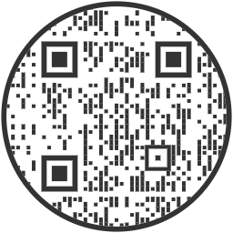
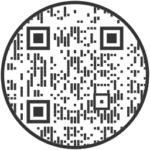

Контактная информация
Если вы обнаружили ошибку или у вас есть предложения по улучшению нашего эмулятора, пожалуйста, свяжитесь с нами, используя предоставленные ниже контактные данные. Для удобства справа представлен ряд QR-кодов, которые автоматически создают шаблоны для фиксирования возникшей ошибки (см. рисунок 1) и для предоставления рекомендаций при дальнейшей разработки сайта (см. рисунок 2). Для связи с разработчиком возможно обратиться по следующим контактным данным:
Email: ochre4@mail.ru
Телефон: +7 (920) 502-9031

Рисунок 1 - Шаблон письма "Возникла ошибка"

Рисунок 2 - Шаблон письма "Рекомендации"